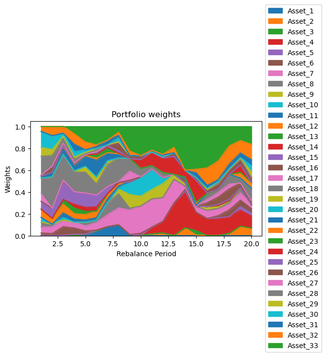

Research Question 研究问题
The project asks a practical portfolio-engineering question: if an asset manager receives only historical asset prices and factor returns, can the strategy repeatedly turn that information into tradeable portfolio weights? I framed the problem as a model-to-portfolio pipeline rather than a one-time optimization. At each rebalance date, the strategy estimates expected returns and risk, solves a constrained allocation problem, converts weights into shares, and holds the portfolio through the next investment window. 这个项目的核心问题是：如果资产管理人只有历史资产价格和因子收益，策略能不能在每个再平衡日把这些信息稳定地转化为可交易的组合权重？我把它理解成一个从模型到组合的完整 pipeline，而不是一次性的优化。每个再平衡日，策略先估计预期收益和风险，再求解约束组合权重，最后把权重转换成持仓股数并持有到下一个窗口。
The goal is not to claim that OLS-MVO is the final trading strategy. The point is to build a clean benchmark engine: inputs are updated only with information available at the time, the allocation is long-only, and performance is judged through an out-of-sample wealth path plus turnover. 这个项目不是要证明 OLS-MVO 就是最终交易策略，而是先搭建一个干净的基准引擎：每次只能使用当时已经可见的信息，组合不允许做空，并通过样本外财富路径和换手率来评价策略。
Data and Preprocessing 数据和预处理
I tested the strategy on the third project dataset: 33 assets with monthly adjusted prices from December 1999 to December 2014, plus eight factor returns and a risk-free rate. The out-of-sample period begins after the first five years of history, and the portfolio is rebalanced every six months. 我使用第三组项目数据进行测试：33 个资产，月度复权价格覆盖 1999 年 12 月到 2014 年 12 月，并配套八个因子收益和无风险利率。样本外回测从前五年历史之后开始，组合每六个月再平衡一次。
| Item | Setup | Role in the backtest |
|---|---|---|
| Assets | 33 assets | The optimizer can allocate across a broad cross-section instead of a narrow stock list. |
| Factors | Mkt RF, SMB, HML, RMW, CMA, Mom, ST Rev, LT Rev, RF | The first eight factors explain asset excess returns; RF converts raw returns into excess returns. |
| Return construction | Monthly adjusted-price returns minus RF | Adjusted prices include corporate actions, and excess returns match the factor-model setup. |
| Backtest design | 20 semiannual rebalance periods from 2005 to 2014 | The first five years are used only to initialize the estimation history. |
Strategy Pipeline 策略流程
I organized the project as a function that receives the expanding history available at a rebalance date and returns a weight vector. This matters because it prevents look-ahead bias: the strategy cannot use future prices or future factor returns when it decides today's allocation. 我把策略写成一个函数：在每个再平衡日，它只接收截至当时可见的历史收益和因子收益，然后输出一个权重向量。这样可以避免未来函数问题，因为策略在决定当前配置时不能使用未来价格或未来因子收益。
| Step | What happens | Why it matters |
|---|---|---|
| 1. Update history | Use all observations up to the current calibration date. | Mimics the information set available to an actual portfolio manager. |
| 2. Slice estimation window | Use the most recent 36 monthly observations for OLS estimation. | Balances recency with enough observations for factor regression. |
| 3. Estimate \( \mu \) and \( Q \) | Run OLS factor regressions and convert coefficients into return and covariance inputs. | MVO needs forward-looking inputs, not just historical prices. |
| 4. Optimize weights | Solve a long-only MVO problem with a full-investment constraint. | Keeps the strategy investable and prevents short-sale dependence. |
| 5. Hold and rebalance | Convert weights into shares, hold for six months, then repeat. | Creates a realistic path of portfolio value and turnover. |
Estimation: From OLS to Portfolio Inputs 估计：从 OLS 到组合输入
The estimator starts by constructing monthly excess returns. For each asset, I regress excess returns on the eight factor returns. The fitted intercept and beta exposures are then translated into expected return and covariance estimates. 估计器先构造月度超额收益。对每个资产，我把超额收益回归到八个因子收益上。随后，回归得到的截距和 beta 暴露会被转化成预期收益和协方差估计。
The key point is that the optimizer does not use the regression coefficients directly. It uses the implied expected return vector \( \mu \) and covariance matrix \( Q \). Factor covariance matters here because systematic factors can move together; ignoring that co-movement would make the risk estimate too simple. 关键点在于，优化器并不直接使用回归系数，而是使用由回归结果推导出的预期收益向量 \( \mu \) 和协方差矩阵 \( Q \)。这里必须考虑因子之间的协方差，因为系统性因子会共同波动；如果忽略这种共同波动，风险估计会过于简单。
| Symbol | Meaning |
|---|---|
| \(V\) | Matrix of factor loadings across assets. |
| \(\bar f\) | Average factor return over the 36-month estimation window. |
| \(F\) | Factor covariance matrix. |
| \(D\) | Diagonal matrix of residual variances, capturing idiosyncratic risk. |
Optimization and Rebalancing Rule 优化和再平衡规则
The allocation is intentionally conservative in structure: no short positions, weights sum to one, and the portfolio must meet a target expected return equal to the average estimated return across assets. This target is simple, but it makes the optimizer avoid a pure minimum-variance portfolio that could ignore return estimates entirely. 这个配置在结构上是比较保守的：不允许做空，权重和为 1，并且组合预期收益需要达到所有资产平均估计收益。这个目标收益设定很简单，但它可以避免优化器退化成完全不看收益的纯最小方差组合。
After weights are chosen, the backtest converts them into the number of shares using current prices. At the next rebalance, the existing holdings are marked to market before a new allocation is chosen. Turnover is then measured as the absolute difference between the new target weights and the pre-trade weights. 权重确定后，回测会用当前价格把目标权重转换成持仓股数。到下一个再平衡日，先用最新价格给已有持仓估值，再重新优化新权重。换手率则用新目标权重和交易前权重之间的绝对差来衡量。
Results 结果
On the third dataset, the OLS-MVO strategy grows from $100,000 to $226,886.79 over the out-of-sample period. The wealth path is not smooth: it falls below the initial value during the crisis window, then recovers and compounds strongly through the later part of the test. 在第三组数据上，OLS-MVO 策略从 $100,000 增长到 $226,886.79。财富路径并不平滑：组合在危机窗口中一度跌破初始资金，之后恢复并在回测后半段明显增长。

The weights chart shows why the strategy should be evaluated as a portfolio construction exercise, not only as a return chart. The optimizer changes exposures meaningfully across periods, but the no-short constraint keeps the portfolio interpretable. The 0.5501 average turnover also suggests that rebalancing is active, so transaction costs would be an important next robustness check. 权重图说明这个项目不能只看收益曲线，也要看组合构建过程。优化器会在不同时期明显调整暴露，但 no-short 约束让组合仍然保持可解释性。0.5501 的平均换手率也说明策略交易并不低频，因此交易成本会是下一步必须加入的稳健性检验。
Takeaway 我的理解
My main takeaway is that portfolio work is not only about choosing a clever signal. A usable strategy needs a repeatable data pipeline, an estimator, an optimizer, a rebalance rule, and diagnostics that reveal what the optimizer is actually doing. This project gave me a more practical view of investment risk: small choices in estimation window, target return, and turnover treatment can materially change the final strategy. 我最大的收获是，投资组合项目不只是找一个聪明的信号。一个可用的策略需要可重复的数据流程、估计器、优化器、再平衡规则，以及能够解释优化器行为的诊断指标。这个项目让我更实际地理解了 investment risk：估计窗口、目标收益、换手处理这些看似小的设定，都会明显改变最终策略。
What I would test next 下一步会继续检验什么
- Add transaction costs and slippage so turnover is penalized directly. 加入交易成本和滑点，让换手率直接进入策略评价。
- Compare against equal-weight, historical mean-variance, and factor-parity baselines. 和等权组合、历史均值方差组合、因子风险平价组合进行对比。
- Add concentration constraints so no sector or small group of assets dominates the allocation. 加入集中度约束，避免单一行业或少数资产主导组合。
- Stress test the 36-month estimation window against shorter and longer alternatives. 对 36 个月估计窗口做敏感性测试，比较更短或更长窗口的结果。